Module 7
Launching and Connecting
Sections of this module:
IntroductionCreate a ssh key
Launching an instance
Connect to the instance
Configuration and control
Connect to a remote desktop
Install a desktop environment
Connect with X2Go
Connect with VNC
Running several desktop environments
Graphical Interfaces on the ssh terminal
Install a web server
Managing storage
Summary
Appendix
View all sections on one page (Printer friendly)
Connect with X2Go
We will first install the X2Go Server on your instance, and afterwards the X2Go client on your local computer. Then you can access the virtual machine’s desktop with the X2Go client.
Server installation

In this tutorial we assume you are using the most recent release of the Nectar Official Ubuntu. If you are using an earlier version of Ubuntu, or another Linux distribution, you may need to do other steps. This will be commented upon in the following instructions at the relevant places. See the official X2Go documentation for details on the steps to perform.
-
Add the X2Go repository and refresh the software package system by typing into your ssh terminal:
sudo add-apt-repository ppa:x2go/stableand confirm this with [Enter]. Then, type:sudo apt-get update -
Install the X2Go server. Type into your ssh terminal:
sudo apt-get install x2goserver x2goserver-xsessionConfirm the question on whether to use up the said disk space with ‘Y’ - We now have to install extra bindings for our desktop environment which add extra features for X2Go (e.g. file sharing). Follow the instructions for the environment you want to use (if it is not listed, see official documentation)
-
LXDE: In your ssh terminal, type
sudo apt-get install lxdesudo apt-get install x2golxdebindingsNote: If the installer package complains about unmet dependencies and suggests to remove lxde, say yes to this. Afterwards, re-install lxde again with the command -
GNOME: GNOME only works for versions earlier than gnome 3.10, better earlier than gnome 3.08, as pointed out earlier). In your ssh terminal, type:
apt-get install x2gognomebindings -
KDE: In your ssh terminal type:
sudo apt-get install plasma-widget-x2go
-
- The X2Go server should now be running. You can check this with typing into your ssh terminal:
service --status-all | grep x2goThe result should show a line like this:[ + ] x2goserver
If the service is running. If it isn’t, you can start the server by typing:
service x2goserver start
If in doubt, or anything is not working, try restarting your instance before you try anything else (we have already restarted the instance here).
Client installation
You will now install the X2Go client on your local computer. Depending on which OS you are using, instructions will differ. Go to the instructions below for your OS. If you have a platform not listed here, you can find additional documentation on how to install the client on the official X2Go website. A good instruction can also be found here.
-
Ubuntu: Install the client by typing into a terminal on your local computer:
apt-get install x2goclient -
Windows: Download and install the newest windows client from the X2Go website. Follow the installation wizard’s steps, you may keep all default options.
-
Max OS X:
-
The X2Go Mac client uses the OS X X11 server called XQuartz. If you don’t have Xquartz yet, you can get it on the XQuartz website. Download and install it. Note: there is also a download of the file on download.cnet.com. Search there for “XQuartz”. If the download speed on the original website is painfully slow, you may download XQuartz from here. Just make sure you download the newest version.
-
At the end of the installation, it will point out that you will have to log out and log back in again for changes to take effect. You can also do this after we have changed some settings in the next step.
- You have to enable a few settings for Mac.
- Start the XQuartz server. You can find it in the spotlight search (open it with Cmd+Space), and type in “xquartz” to find it. Click on it to start.
- 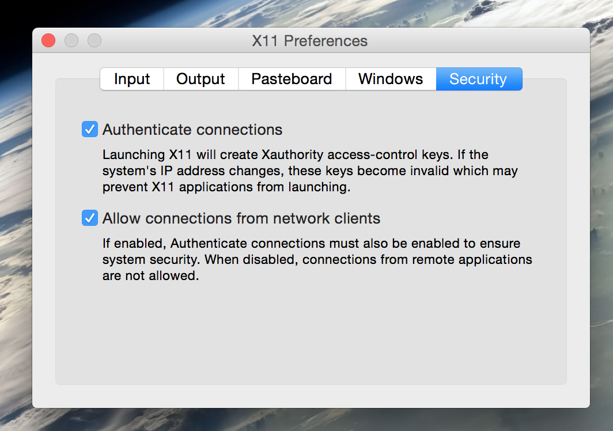 In the Preferences, go to the Security tab and enable “allow connections from network clients”. NOTE: If you start XQuartz after already having logged out and in again, you can access the settings (or exit full screen mode) with CMD + , (command and comma) Important: Because above instructions may change any time, please refer to the most current X2Go documentation
- Download and install the newest X2Go client from the X2Go Website.
-
Connecting the X2Go client
We will now start the X2Go client application that you installed in the last step and connect it to the instance.
Step 1: Start the client
On Linux, search in your application menu, or simply type into your local computer’s terminal:
x2goclient
On Windows and Mac, start the application as you do with any other program (find the x2goclient application). E.g. on Mac, bring up the spotlight (Cmd + Space) and search for “x2goclient”.
Step 2: Start a new session
The session settings should come up right away if you are using the client for the first time. If you are not, click on “New session”, which is the top left button that looks like a blank sheet of paper.

Hint for Mac users: the X2Go windows may be sized too large for your screen initially, so you cannot see the usual “OK” and “Cancel” buttons in the dialogue windows. To resolve this, you simply have to select the window by clicking on the top window bar and holding the left mouse button to move the window a little bit. When you release the mouse button, the window should be automatically resized to fit your screen.
The session preferences window should look similar to this:
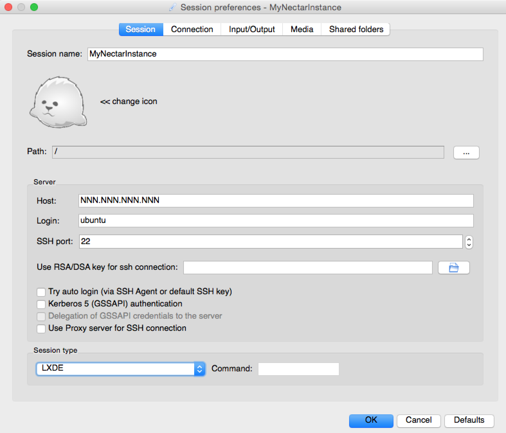
-
Specify your session name in the first field (In the screenshot, we called it “NeCTAR Tutorial session”).
-
In the “host” field, type in your IP address
-
In the “Login” field, specify the username (in this tutorial, it is “ubuntu”).
-
Select your private SSH key in the field “Use RSA/DSA key for ssh connection”. You may click on the little folder symbol behind the field to browse for your private ssh key file. Note for Mac/Linux: earlier in this tutorial, we have put the key in the .ssh folder in your home directory. If you cannot see this directory, you have to create a shortcut to it. Open a terminal on your local computer, and type in your local computer’s terminal:
ln -s ~/.ssh ~/sshYou should now have a folder called “ssh” in your home directory which you can see from the “select file” dialogue. -
As a “Session type”, select the Desktop environment you installed earlier (e.g. LXDE, Gnome, KDE). You may also have installed several desktop environments, in this case select which one you wish to start.
-
Click “OK” to get to the X2Go Start Window. If asked whether to trust the host, click “Yes”.
Step 3: Connect to the desktop
We will now connect to our remote desktop. You should now be seeing the X2Go Start Window:
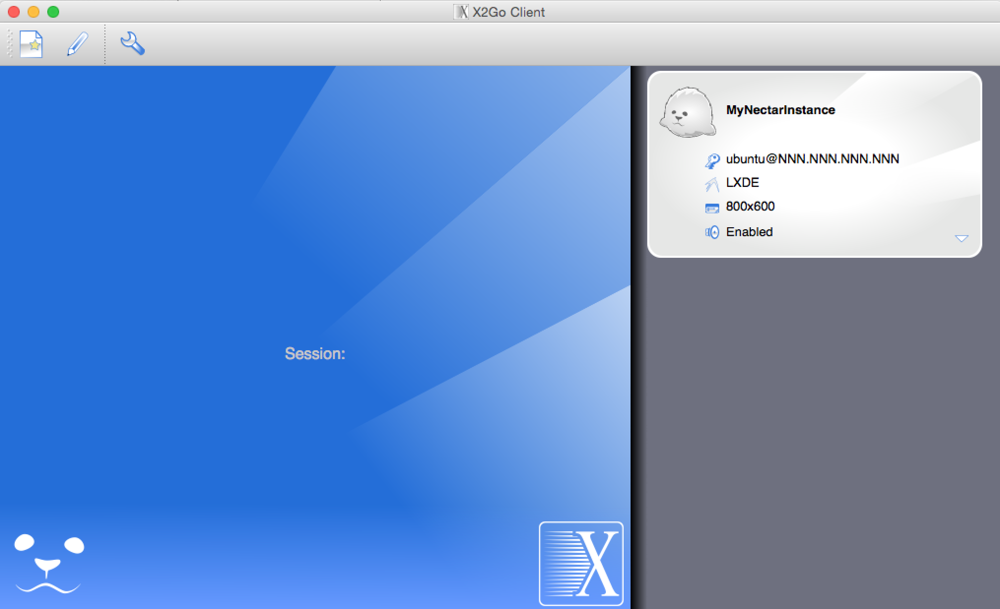
On the right side of the Window, you can see a shortcut to your session. Note that you can quickly change the desktop environment and screen resolution in the box. Don’t do this now however, let’s first try to connect with the default. You can change this next time you log in.
Click on the box with your session name, and the client is going to try to connect to your instance’s remote desktop. You will have to type in your ssh key passphrase.
This may take a while, especially if it is the first time you connect. Don’t get impatient. This is a good time to grab a cup of coffee.
A window will then come up which shows your desktop. Below is an image of an example when XFCE was used:
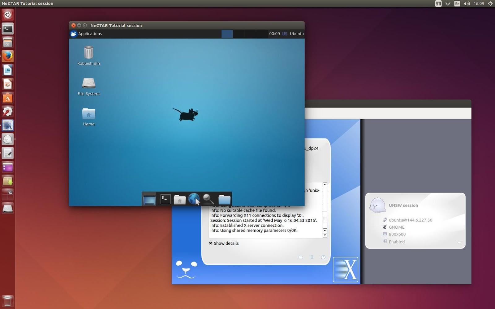
You can increase the screen size and the resolution of your desktop should adapt to it. Resizing the window can sometimes be a bit slow, therefore you may try different screen resolutions in the login box (which displays your session name) so you don’t have to resize the window every time.
To close your remote desktop, you should log off. This is in most desktop environments a power button somewhere on the desktop, or it is accessible with a right click on the desktop. Choose “logout” as an option, not “restart” or “shutdown”. If in doubt, just close the window in which the remote desktop is displayed (this is the “dirty” option, but it will also work).
When you log back in, you don’t have to specify a password for the ubuntu user, as we are using your ssh key instead.
Important Note if you are using KDE:
KDE does not adapt the screen size that we set in the client. Therefore, we have to disable the “KScreen KDED module”. We will do this right away.
-
On your remote KDE desktop, go to “system settings”. You can right-click on the desktop and then select “Run command…” from the drop down.
-
In the text input field that comes up, type “System Settings” and the drop-down should show the System Settings which you can click on.
-
Go to System Settings > Startup and Shutdown > Service Manager, and uncheck “KScreen 2”.
-
Log out (Right click on Desktop > Leave > Log out) and log back in again (You don’t have to specify a password for the ubuntu user when you log back in, as we are using your ssh key instead). You should now see your full desktop. Your screen size should adapt to what you have set in the session settings of your X2Go client (default is 800x600).
File sharing with X2Go
One nice thing about X2Go is that you can do file sharing between your local computer and your instance easily on the desktop.
Let’s now enable file sharing so we can drag and drop files between our computer to the instance’s desktop.
Step 1. Enable file sharing
We have to enable file sharing for our instance’s user “ubuntu”. For this, you have to add the user to the group “fuse” on your instance. Go to your ssh terminal (or open a terminal on your remote desktop) and type:
sudo addgroup fuse
sudo adduser ubuntu fuse
Important if are using a Mac:
You also have to enable remote login to support file sharing.
To enable file sharing, you also have to change your system preferences. Go to the Apple (on top left of your screen) > System preferences, and then select “Sharing”:
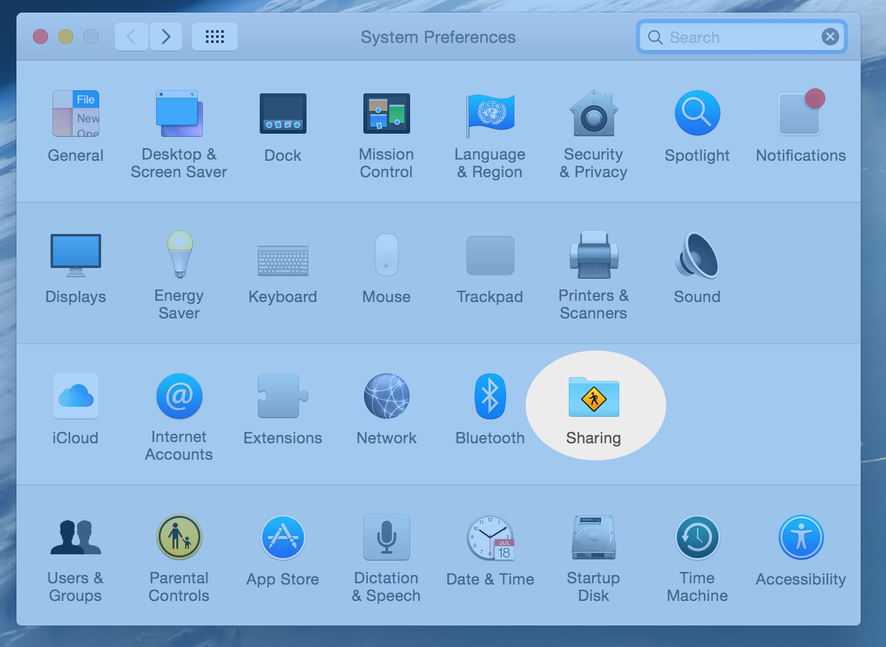
Activate the checkbox for “Remote login”:
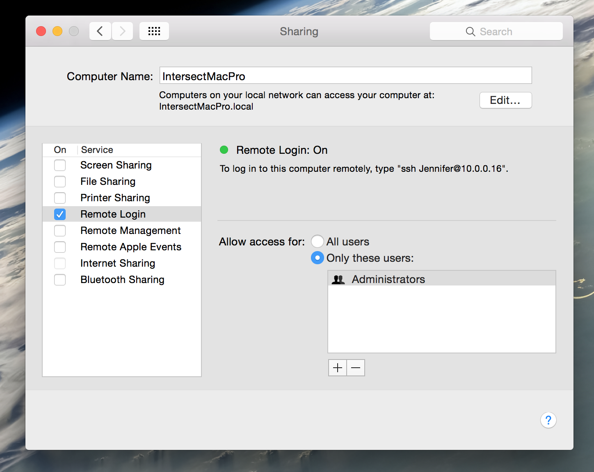
Should you have problems connecting in the following steps, try restarting your Mac computer for the changes to take effect.
Now, we have to configure the X2Go client session preferences to enable file sharing.
First, create a folder on the desktop (or elsewhere if you like) which you are going to use as our “shared folder”. Name it for example “x2goSharedFolder”.
Think of this folder as a place where you can put files which you can then access from within your instance also. You can Drag & Drop files into this folder, and it will be easy to access them from your instances remote desktop. Conversely, you can Drag & Drop files from within your remote desktop into this folder, and they will appear on your local computer as well.
Close your remote desktop by logging off (or just shutting the window in which your remote desktop is displayed).
Then, go back to the X2Go Start Window in the X2Go client (If you aren’t there already, click ‘cancel’ button in the login field). You should now see this X2Go Start Window:
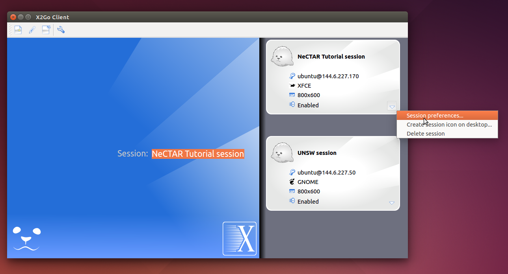
Via the little arrow on the right bottom of your session box, select “Session preferences” as shown in the screenshot above. Here you can change preferences of your session. Go to the Tab Shared folders, and click on the little folder symbol to select a folder of your choice which you want to use for sharing (earlier we have named this “x2goSharedFolder” on our desktop):
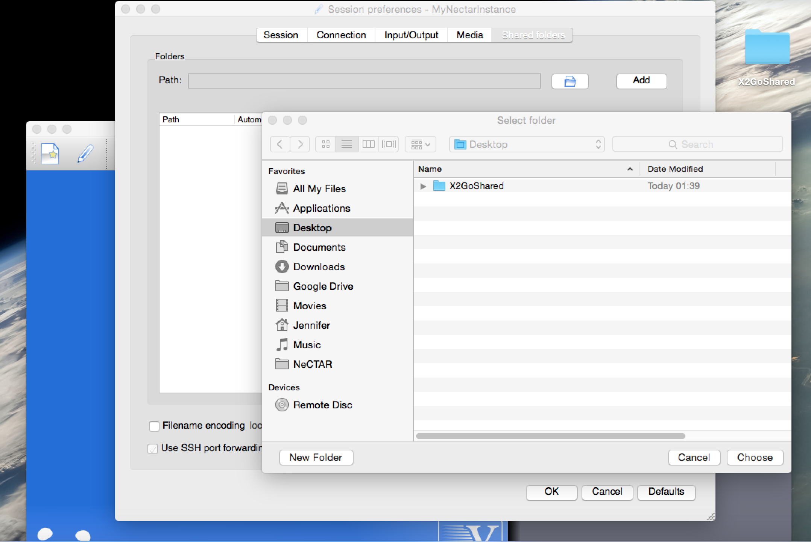
When you have selected the folder, don’t forget to click on the “Add” button next to the path to your file. Next to the new element added to the box, enable the “Automount” check box. Finally, click “OK” to close the window.
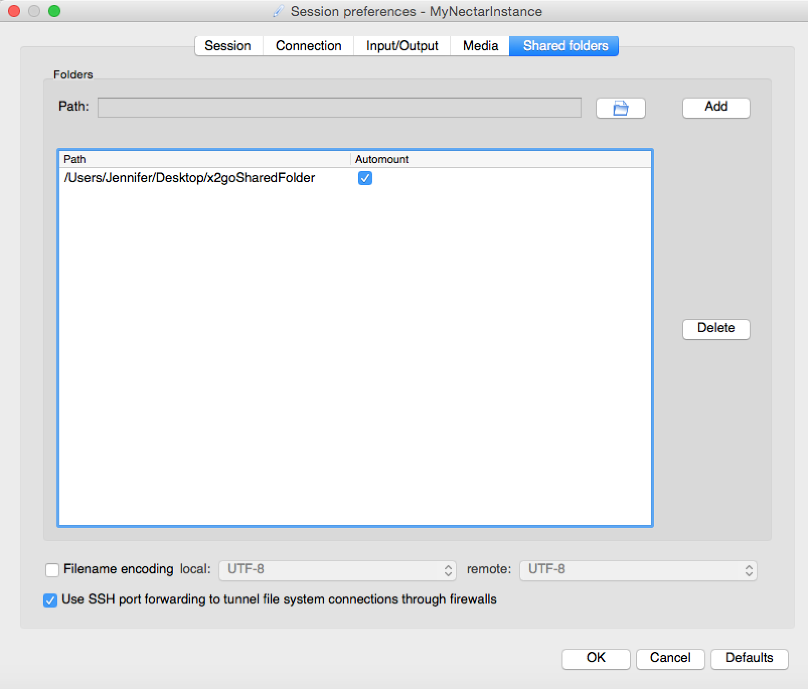
Step 2. Logging in.
Now you can open your remote desktop by clicking on your session box and logging in again. You don’t have to specify a password for the ubuntu user, as we are using the ssh key instead. You will typically find the shared folder of your computer as a link on the remote desktop (see comments below for your desktop environment).
Step 3. Remaining configurations for individual desktops.
Some desktop environments require some extra settings to make file sharing work. Refer to the documentation below for your desktop environment.
If you are using LXDE:
No extra settings required. Your shared folder should be on the desktop now.
If you are using KDE:
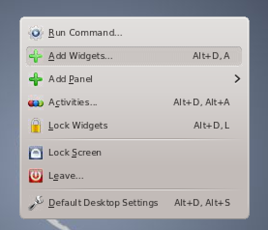 Your shared folder will be visible on your remote machine by adding the “X2Go plasmoid applet” to the desktop. To add the widget, right-click on the desktop and select “Add widgets…”.
Note: You will need to have installed the plasma widget, which we did in a previous step with the command *sudo apt-get install plasma-widget-x2go.
In the search window that comes up, type “x2go” and the x2goplasmoid should come up in the list. Double-click on it to add it to the desktop. 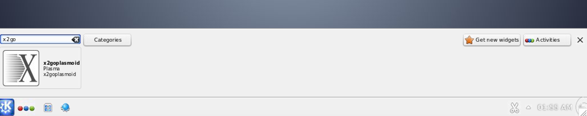
You can now access your shared folder on your local computer via the link on the plasmoid. After you open the folder (double click), you should then see something like this on your desktop: 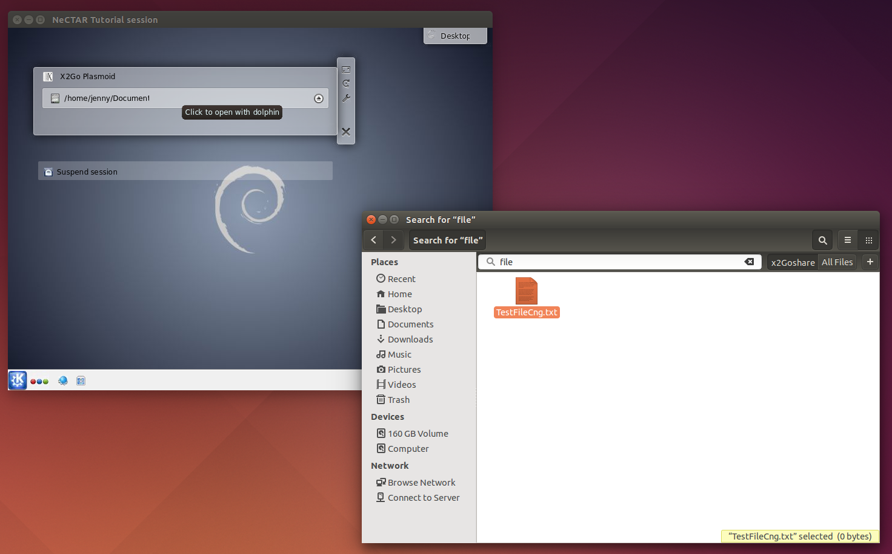
You can change the size of the widget by dragging it if it looks graphically wrong. You need to hover over the right-hand menu of the widget and click with your mouse on the little box in the top: 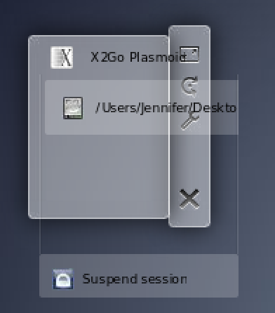
You can then drag it out to the right side:
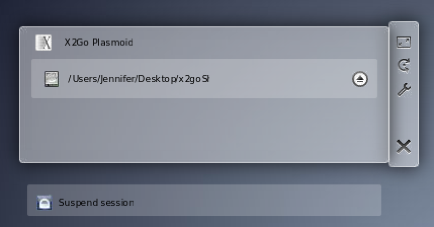
If you are using XFCE:
File sharing has to be set up manually. The shared folder can most likely be found in the folder /tmp/.x2go-ubuntu/media/disk. Check what the name of your folder may be. Type into your ssh terminal:
ls /tmp/.x2go-ubuntu/media/disk
you should recognize your folder name, which is named after the path where it is located on your computer (if you named your folder x2GoSharedFolder, the name should end with this). Then, type
ls /tmp/.x2go-ubuntu/media/disk/<your-folder-name>
to see all the files you have in your shared folder (if your folder is empty, no files will be listed, of course). Right-click on the desktop and select “Open Terminal Here”. Then, type
ln -s /tmp/.x2go-ubuntu/media/disk/<your-folder-name> MySharedFolder
replacing <your-folder-name>> with the name you found above. Be careful with spelling (it’s case sensitive) — if you don’t get the path to the folder right, it will not work. You can also change the name MySharedFolder in the command to something else. When you click on the desktop again, the link to the shared folder should appear.
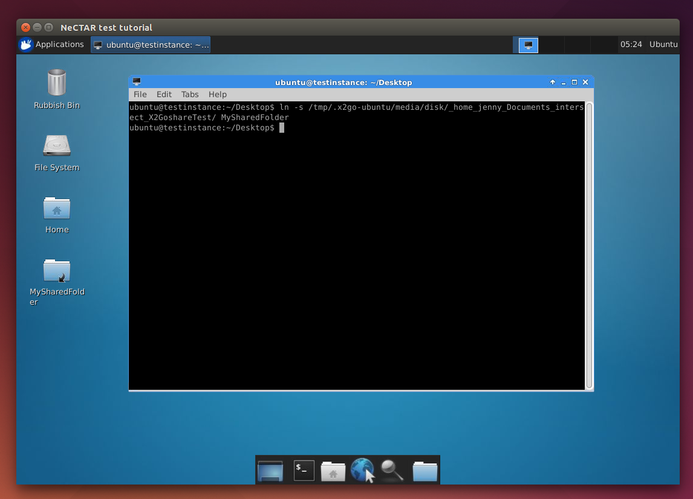
You can verify where your shared folder has been made available by looking into the file “/var/log/syslog” on your instance. You should see a line that contains the following:*“… successfully mounted
Step 4: Exchange files
Your shared folder can now be accessed both from your instance and your local computer.
First, on your local computer, create a text file in your shared folder (x2GoSharedFolder), write some text in it, and save it to the shared folder.
For example on a Mac:
-
Open TextEdit (Cmd+Space, type “textedit” and open the TextEdit program)
-
Write a message into the window
-
Click “File > Save” and select the shared folder as a place to save the file to. Name it for example “x2goTest”.
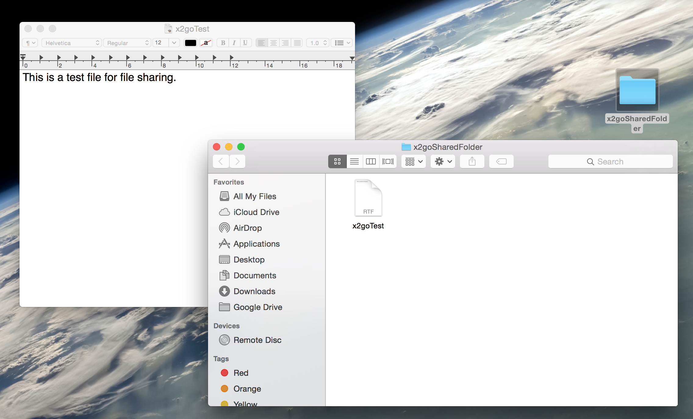
Now, go to your remote desktop. Open your shared folder (you should have found where it is in the last step). For example, when you are using the LXDE desktop environment, your shared folder will be on your desktop.
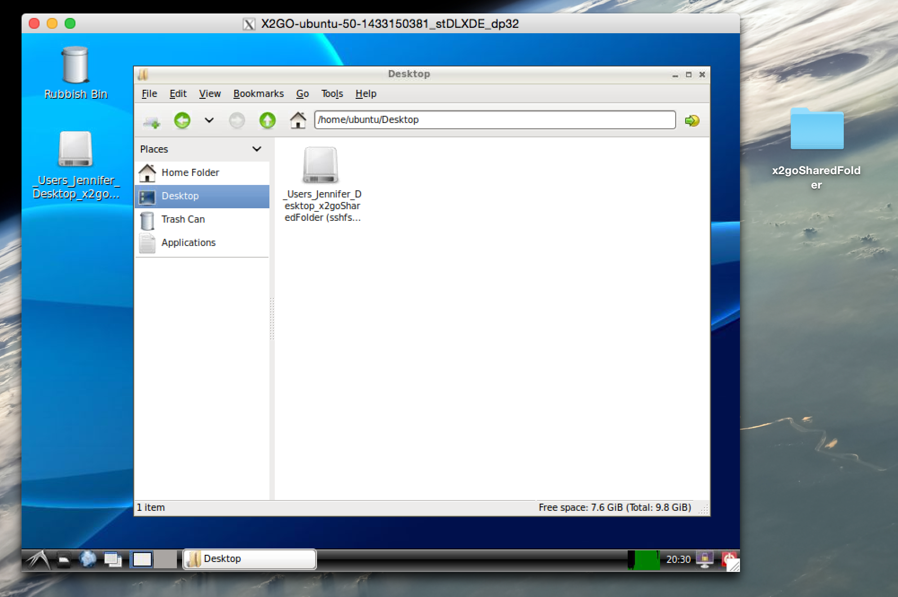
Now if you open the shared folder, you should see the text file you have just created. You may open it to see what’s in there:
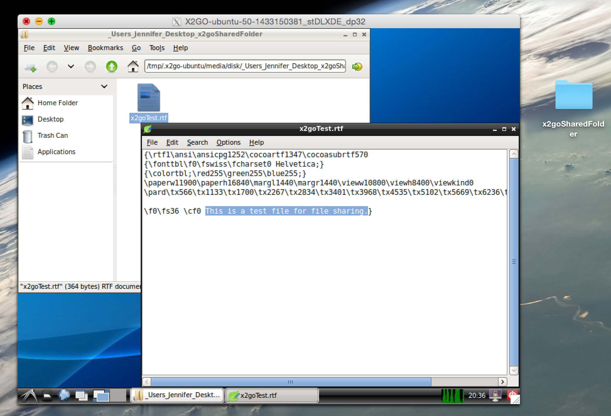
Depending on which text editor you used to create your file, it may not look the same on the remote machine. This is because it uses a Linux Operating system, and the default editor on your instance may not open the file with the program which supports this file format. For example, in the screenshot above, you can see that the RTF file we created on a Mac contains formatting instructions as well (you can see it is an RTF file because it is called x2goTest.rtf). Because Linux opens it in a “plain text editor”, you can see the formatting instructions as well. This should not worry you at this point, because we are just testing how to share files with your remote desktop, but this is a good place to notice some differences between operating systems and text files.
Now, we are going to do it the other way round: We are going to create a text file on our remote desktop, copy it to the shared folder, and see that we can access it in our shared folder on our local computer as well.
On your remote desktop, right click on your desktop, and select “Create new > empty file” (This may be called different in your desktop environment, but it should not be too hard to find how to create a new file. If there is no such command on the desktop, open your file explorer, go to your Desktop in the navigation pane on the left, and try to do it there). Name the file “TestOnVM.txt”.
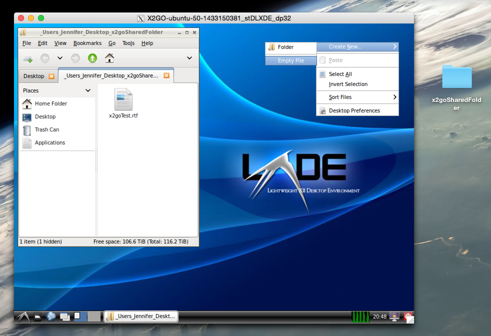
Open the file by double-clicking on it. A text editor will open. Write a message into the file, save it (File > Save), then close it.
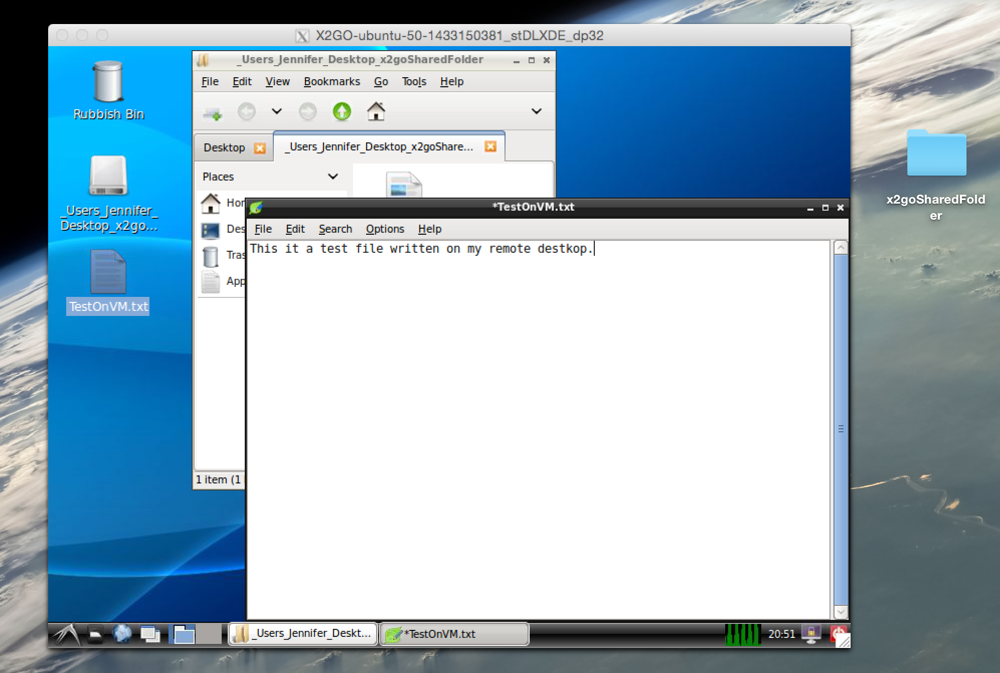
Now, drag the file from the desktop to your shared folder. A message will appear that it is being copied, and then you should see it in your shared folder:
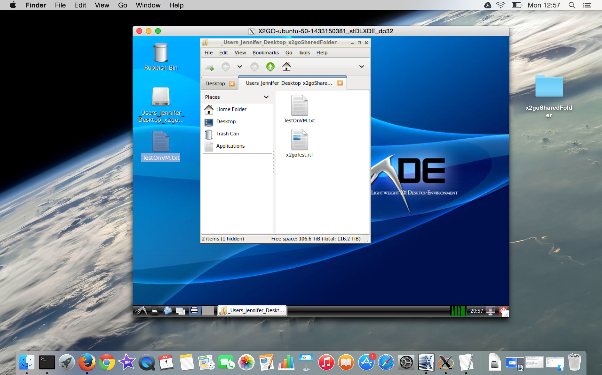
Now, you can open your shared folder on your local machine (the x2goSharedFolder on your desktop).
It will have the new file in it! You may double-click on it to open it and find the message you typed on your remote desktop inside.
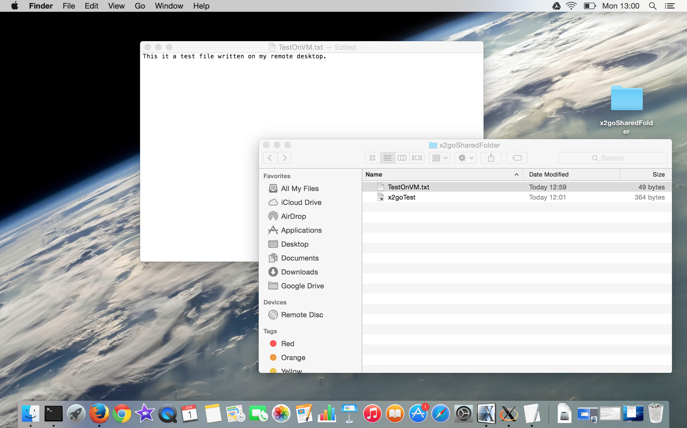
Troubleshooting
If you ever run into trouble with the desktop environment, try first to log out and log back in again. If that does not work, you may have to restart the X2Go server. You can do this in the ssh command line of the instance (you may also open a terminal on your remote desktop to do this):
sudo service x2goserver restart
or
sudo /etc/init.d/x2goserver restart
Resources
-
X2Go documentation: Installation of the X2Go server
-
A good article about installing X2Go server on Ubuntu

 This work is licensed under a
This work is licensed under a